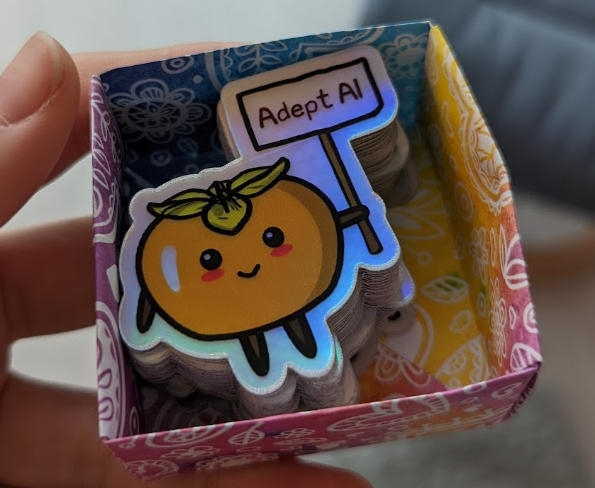

I recently had the incredible privilege and experience of interviewing at five places, all of which I'd be very happy to go to. Even more than the details of interview processes, the ins and outs of considerations, emotional whims and impactful conversations are rarely documented. I write this as love letters to these companies and to eternalise this experience for myself, complete with dramatic Bad Apple lyrics.
Blue Rose Research
Comparing the efficacy of two good deeds is often executed poorly, and is always deeply uncomfortable. I had the difficult experience of comparing working on getting Democrats elected and working on AI Alignment. I never really reached a conclusion, but at least for me the positive impact I could make in either endeavour was a close call. Blue Rose is a group that "helps campaigns make higher quality strategic decisions by democratizing access to accurate measurement" and talking to them made that feel like a drastic understatement. I'm quite confident that working at Blue Rose is a great way to make a positive impact and that they have a really stellar engineering team.
My relationship with Blue Rose started in the summer of 2021 when I tagged along to a party (at what I later learned was at the apartment of David Shor) last minute and somehow found the only two other machine learning people there (I was wearing a shirt that said frontend developer on the front, and backend developer on the back). They were both Blue Rose engineers and I left deciding that they were extremely smart, dedicated (they could all be making oodles more money elsewhere, though Blue Rose pays very well) and it was a shame they were not on my radar before. I'm genuinely not inspired often, but the combination of dedication and whatever the opposite of learned helplessness is that they demonstrated did that for me.
They also had one of the better interview questions I had come across, where the format was being given a small project written with various bugs / code quality flaws and being asked to investigate and fix various parts of it -- this was pretty neat!
It's surely not uncommon for people to consider jobs based on morality, but this was at least my first time thinking about it. What was difficult for me is that what I cared about most was not the same as what I emotionally respond to. Building impactful products is a thrill! Doing AI research doesn't have the same kick. Politics certainly has that kick. I believe in doing what I think is most important, which pointed to staying in AI work but it was hard for me to tell if that was really the case or if I was just picking money and status.
I'm still a little bothered in this decision, but the least I can do is suggest you to apply and do what I couldn't.
OpenAI
I nearly did not apply to OpenAI out of loyalty to Cohere. As a direct competitor this seemed like a significant betrayal, not just to the team I'd leave behind but also to myself. OpenAI did a lot for me in terms of getting me to stop mulling over "why am I leaving" and translating that into a much more productive "what am I looking for?". Some of it was just the situation (they were one of the earlier interviews) but it was also the talking to the people there. The part that activated this switch was that they didn't pigeonhole me into a role, rather we explored roles together as if I was capable of anything (given time) which also speaks strongly to the culture.
In my intro call with Rob (recruiter) he asked what I want to work on and I half-jokingly said "haha not sure, wanna help me figure it out?" and Rob proceeded to pick a team for me that I would later come to believe was the most exciting team at OpenAI to me. My interviews included talking with Jerry Tworek, whose team I was angling to join, and Jerry performed best in my manager screening criteria of "would I be comfortable crying in front of them" (I had other criteria too, btw). OpenAI came off as a place with an intense nerdiness about shipping things (nerdiness oft detracts from shipping things because technically-interesting will veer away from productive and vice versa) which I particularly liked and think is quite rare.
I think Rob (and probably other OAI recruiters) are possibly just magnitudes better than others I've seen in terms of being able to understand all the context, people's values and have productive conversations with them. It's hard to describe how good (both enjoyable and effective) the recruiting was here without going through all the details, but it was phenomenal. Of course, OpenAI is also an exceptional company in terms of the caliber of people to work with, impact, technical interestingness and resources but I knew that going in. It was the recruiting process that impressed me. In fact a few months later a friend was telling me that they were really impressed with OpenAI recruiting.
It turned out that OpenAI was not the best fit for what I was looking for, which is misrepresentative to say because it was also a fantastic fit. I’m generally grateful for the process. I think it's good evidence that interviewing with companies you don't end up working at can be productive for one's job search.
can you tell me who you are? can you tell me where i am? i've forgotten how to see, i've forgotten if i can
Adept AI
It's a little obscene how much I came to love this company, quite tangibly the recruiting equivalent of limerence.
What made it magical was that when I had just taken a call to get to know them in January my takeaway was something like "very competent team, but nothing to show for it yet and lacking direction" and seeing where they ended up just months later caused too much of an adrenaline rush for something I had nothing to do with. The most compelling part about Adept to me was that early-stage startup adrenaline, having an intense and unique direction and emotionally registering to me as a chance to be a part of something like Cohere again.
The team communicated their culture exceptionally, it was really a show don't sell situation. I somewhat hesitantly asked if they'd be interested in interviewing in person and was thrilled when they said yes (I'm a big remote work hater) and walked into the office to be greeted by three beautiful dogs all excited to love me! I had lunch at their office before the four hours of interviewing and the team (incl. dogs) did a great job of having relaxed vibe-y time with me. In between interviews I rested on a couch, surrounded by dogs and ate some mango. I petted a dog during an interview too! The culture shone through in that this was the only set of interviews where I felt perfectly safe butting heads with the leadership. It was evidence of good communication norms, culture etc. but also way more respect for me than I expected. From the outside Adept was a perfect earlier version of Cohere where I could build the future with my friends.
Adept is going to be in my mind a lot partially because it was a really close call. Maybe if OpenAI hadn't shifted my mindset from thinking about what I wanted about Cohere to be different to thinking about what I want from scratch Adept would've been exactly what I wanted. Maybe a little less EA influence in my life, maybe if they had set up their home base in New York City. Maybe if I were more ambitious or adventurous.

I got them these stickers (they were almost called Persimmon AI Labs) and showed up at the office to gift it to them as a surprise but ended up chickening out and dropped them off in the lobby. I'm still not quite sure what I was worried about, I'm not a particularly nervous person. Probably some combination of social awkwardness, possible regret, and just high stress of interacting with situations related to life decisions. Oh well!
This is a place for my feelings, but I also happen to have thought and investigated pretty hard about whether they will be very successful + a great place to work, and the answer is approximately yes. You should apply, I'll be jealous if you go.
to tell me who i am, who i was uncertainty enveloping my mind maybe it's a dream, maybe nothing else is real but it wouldn't mean a thing if i told you how i feel
Jane Street
I was unconfident if I wanted to stay in ML. It was for bad reasons, like I thought maybe I wasn't good enough at machine learning (or rather that what I was doing wasn't machine learning at all as I do entirely engineering) or that the stakes in ML were too high for me to handle. I was confident these were bad feelings, and they weren't prominent but I still felt the need to explore them. When I applied, a part of me really wanted to go, not just for the leaving-ML reasons but also because I love Jane Street.
I'm very picky about where I'm willing to work, in that I refuse to work anywhere that I'm not very familiar with. I've partied and become friends with the Blue Rose people and leadership, the OAI team I angled for had a friend I'd known for over half a decade. There are also other standards like having fun problems and good people which of course Jane Street meets.
My history with Jane Street started when I was in high school and stranded in Waterloo because of a snow storm. A then-former Jane Street intern now-fulltimer fed me, called my mom and made sure I made it home. Several of my friends from high school and previous internships went on to work at Jane Street, including a few of my former partners and best friends. It sounds a little bit capitalist dystopia, but my many years of having many friends there and living in the unmistakable and beloved Jane Street culture resulted in me forming a very sentimental relationship with this proprietary trading firm.
Jane Street represented moving back to New York City to me. I moved to San Francisco in January with my former partner because he was leaving Jane Street for a job in SF, and I probably prefer to live in NYC. It made this job feel like going home to live the dreamy life I was starting to build and all the sentimentality I had left behind. I had only been in NYC for half a year! This is a jpg of me visiting the office for the first time in 2018, which was also the first time I visited and fell in love with NYC.
The two things I'd really like to communicate is 1. that the culture is wonderful. People really enjoy working there, it's not a big scary evil bank that's going to drain your soul and hours while providing no fun (I think they have an immense amount of fun!). A few words I'd pick to describe the culture are playful, delightfully nerdy and genuine. Secondly, they had hands-down the best technical interviews.
They were better than I thought possible and impressively staffed at two people per interview. I went through five fantastic interview problems, not algorithmic or LeetCode like in nature and very representative of possible work people might do. They opened room for collaboration, and tested skills of problem solving, thinking about edge cases and implementation. I believe most "interview with real-world problems" questions are better than algorithmic ones, but are genuinely much harder to design but Jane Street really nailed it.
I'm a little sad I didn't finally get my chance to learn functional programming. Uh, sometime after the AGI I guess.
if i opened up my eyes, there'd be no more going back
Cohere
am i hurting am i sad? should i stay, or should i go? ive forgotten how to tell. did i ever even know? can i take another step? i've done everything i can all the people that i see, they will never understand
Anthropic
There's some narrative that's only a little true where I was always supposed to go to Anthropic, that it was inevitable and the right choice for me from the get-go. Like I said there were some close calls even though I'm really confident about it now. Here are the two things that won me over with Anthropic:
- I believe that AGI is the most important problem of our time, both because it could be so bad and because we could make it so good. My actual beliefs are a lot more specific than this, and Anthropic (as well as its structural incentives) aligned most. This is captured in really donation matching, investors with shared values, the existing and incoming work and the beliefs of the team there.
- I've come to know lots of people at Anthropic and they're all really nice and lovely! It's really comforting and provides lots of positive signal about what working at the company will be like. I didn't interview at some relevant and at least technically impressive AI companies because of this.
- Kind of 1. again, but I believe Anthropic to be really focused on doing good for the world in a way that I think will be effective (and also probably effective at making me a better person in various ways).
The first time I heard of Anthropic I felt very detached from the AI Alignment scene, which was weird because I had been an EA for years and at that point had been working in AI for a while. I applied in fall of 2021 and got rejected. The things I discussed about alignment back then are very different from my thoughts now, which are also a little different from the ideas I had before I started this interview process. That's nice, because this does genuinely seem like a "not a good fit at the time" situation. It's very likely I wouldn't have interviewed again if they hadn't so sweetly reached out and asked me to. I think their hiring ethos is quite good.
My greatest hesitancy about Anthropic was about just not thinking about alignment the way I currently do. Not so much "is alignment important" and "is working at Anthropic one of the best things I can do for alignment" but more "why do I have to be a good person".
Worrying about alignment and related EA things is hard? It means I can't be as financially rich as I secretly want to be, it's a little alienating and I often worry I have to deal with anxiety about being an insufficiently good person. My career choice here was a defining moment in how I practice morality in my life. All these other places are also doing great things for the world, some of them very competitively good, how was I to choose? I'm quite lucky in that this decision was choosing between several wonderful things, compared to other moral crosswords which usually involve notably bad options.
Those questions are mostly unanswered. I can't be fully confident that my ideas about what's good are correct, and it's much harder to decide how to act on them especially when the ideas are so utilitarianly charged and I, as a human, am not. Some of the decisioning came to maintaining my character -- I'd be pretty disappointed in myself if I gave up on something I love so much (and has done so much good for me) because it was hard.
I am excited to show up for my first day and be shown up in various and many ways, and of course excited for the growth that'll provide. The end of my recruiting journey doesn't end until I find my place and feel at home at Anthropic, and I can only expect that to be as lovely a process as the rest of it has been. If Anthropic resonates with you as a place to work, here is where you apply.
if i find a way to change, if i step into the light then i'll never be the same, and it all will fade to white
Happy to chat about how to think about job searches, big life decisions and being emotionally attached to your place of work. Also to pitch you on Blue Rose and Anthropic!